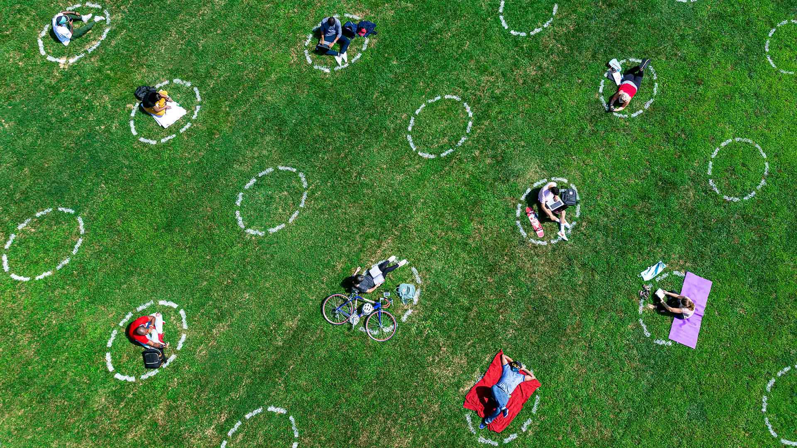
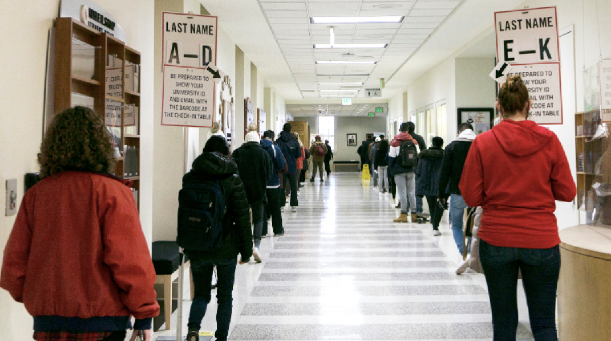
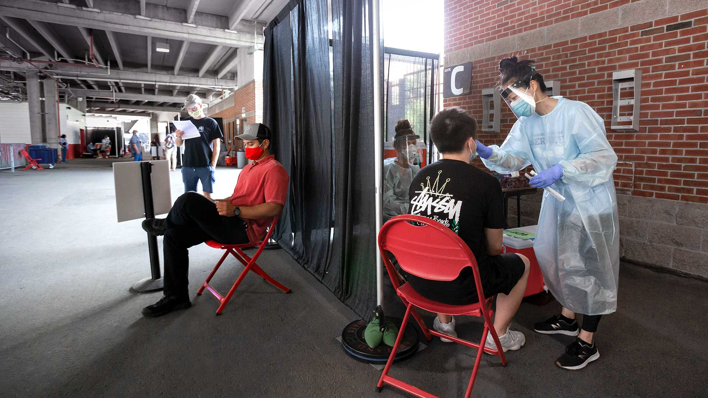

It started as chaos, with students being kicked off campus and forced to move out of their residences halfway through the spring semester.
The University of Maryland has come a long way from the beginning of the coronavirus pandemic on March 13, 2020, with a list of requirements, mandates, and protocols aiming to keep students as healthy as possible amid their return to campus. But still, there are gaps that remain in efforts to track how effectively the campus has been at limiting the spread of the virus on campus.
The university started officially tracking COVID-19 cases of students, staff and faculty since the smaller population returned to campus in August 2020. Those who came to campus were required to be tested no earlier than 14 days before their arrival, though they did not require the same test necessary for anyone who had the virus within three months before returning to campus.
Throughout Fall 2020, testing became widely available on-campus, students were required to be tested bi-weekly to maintain their health status and remain at the university and use its facilities.
To track the positivity rate of students on-campus, the university has used tests required from the university, as well as tests students took and submitted from outside testing centers, to show how well the university and students stayed safe by uploading these results to the COVID dashboard, which is still being updated although the landscape of the coronavirus has changed. Testing is no longer required, masks only have to be worn in classrooms and 98% of the campus being fully vaccinated.
The Diamondback has tracked the data as well to show how the covid positivity rate changed on-campus from August 2020 to May 2021.
There are many things that can account for the anomalies or errors in this data, such as times when students were home for a holiday or break and not being tested on campus, or like Spring 2021, when students began getting vaccinated.
Dr. Donald Milton, professor of environmental and occupational health at the UMD Institute of Applied Environmental Health School of Public Health, has been the primary investigator of the UMD StopCOVID Study since its creation in January 2020, long before this country’s reaction to the virus’ invasion.
“We knew that people were coming back to campus from areas where the pandemic has started,” Milton said. “We work to find out if they brought the virus back with them and try and ‘nip it in the bud’, but we did not do that.”
Milton and his team collected breath samples from people with SARS Covid-2 beginning in June 2020, efforts that have continued to today. By using breath samples, researchers have been studying the role of aerosols in the transmission of covid and analyzing whether people have antibodies, all while seeing how this has been affected in people with the vaccine and/or booster shot, according to Milton.
Though Milton has been testing some on-campus individuals, he is not responsible for the UMD COVID dashboard and is not always confident in his or the university’s numbers.
“I don’t think that our numbers necessarily accurately reflect numbers on-campus and clearly when there’s more covid around we’re collecting more samples,” he said.
Milton also said that the campus dashboard has limitations. While the data can show the trend and peaks of cases, it does not always accurately show the numbers of all students on campus, even though it was a smaller number in fall 2020.
While the 2021-2022 school year has seen a lower level of positive cases because of the university’s high vaccination rate, Milton said trends may be rising because the immunity from the vaccine and/or past COVID-19 antibodies might have left people’s bodies completely, in addition to new variants springing about.
This line graph shows the rate of the university population becoming fully vaccinated throughout the spring 2021 semester. The relatively high amount of students and staff that got access to the vacine early after its release to the public has also had an affect on the fluctuation of COVID-19 cases documented by the university.
The numbers may not have been the most accurate, but the trends can show instances on-campus where students may have not taken the virus as seriously, or peaks from when students returned from places and brought the virus back to campus, and those outside events can better explain the peaks shown.
The university has entered into a more stable part of the pandemic. Almost all students, staff and faculty are fully vaccinated, there is only one positive case—-of UMD administered voluntary tests—-and masks are no longer required anywhere but lecture halls. As this progress is evident, it is also important to reflect on the struggles in the beginning of the pandemic on campus and how faulty testing and the UMD dashboard could be so that it can be improved and the university can be more prepared if there were ever a similar health situation in the future.